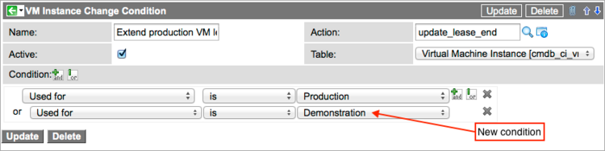
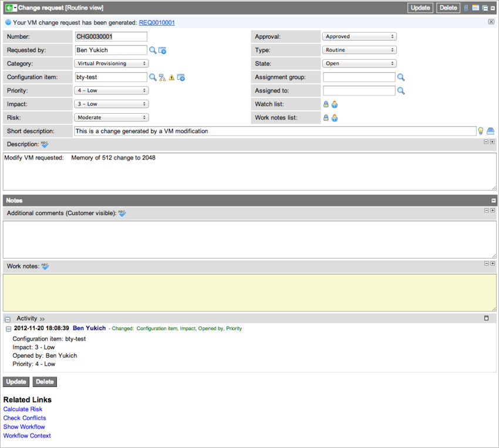
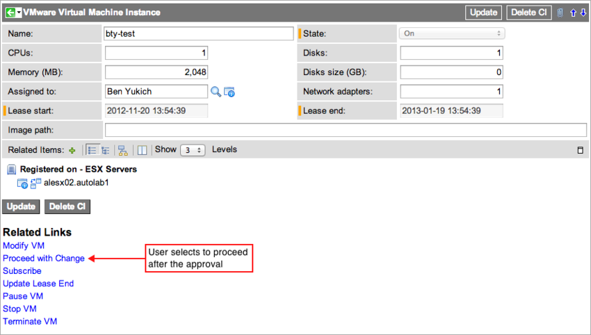

Change Control for Cloud Provisioning
Contents
1 Overview
A cloud administrator can configure ServiceNow to create change requests for specific modifications to VMware and Amazon EC2 virtual machines. The administrator can specify which virtual machine categories and types of modifications require approval through a change request. For example, an organization might require a project manager's approval before a user can extend the lease end date or change the state of a development server. Change request approvals created in this manner are independent of the approvals required by the provisioner who manages the virtual resources being requested. This functionality is available with the Calgary release.
The cloud administrator can configure change control for these actions performed on a virtual machine:
- Extend the duration of a lease
- Start a virtual machine
- Stop a virtual machine
- Terminate a virtual machine
- Pause a virtual machine
- Modify the specifications of a VMware server
- Take a snapshot
- Revert to a snapshot
2 Roles Required
Members of these groups can configure change control for virtual machine modifications:
- Virtual Provisioning Cloud Administrators
- Virtual Provisioning Cloud Operators
For more information about cloud provisioning roles and capabilities, see Cloud Provisioning Security.
3 Change Request Conditions
Cloud provisioning uses preconfigured condition builders to determine if a change request is required for specific user requests, such as those for state changes or memory increases. The change request launches a workflow that executes an approval task and then waits for the requester to commit or cancel the change. You can deactivate change conditions or edit them to create different approval conditions.
3.1 Tables
These tables are used in change control processing.
| Table Name | Contains |
|---|---|
| Change Condition [vm_instance_change_condition] | Records that define the conditions for creating a change request. |
| VM Instance Action [vm_instance_action] | Records that define the type of change (action) that requires an approval, such as additional CPUs or an increase in the data disk size. |
3.2 Change Conditions
The following change conditions in the base system require change approvals for actions performed on production environments:
| Name | Description | Action |
|---|---|---|
| Create production VM snapshot | A user requests a snapshot for a virtual machine. | create_snapshot |
| Extend production VM lease | A user requests an extension to the lease duration for a virtual machine running a production instance. | update_lease_end |
| Modify production VM | A user requests changes to the specifications of a VMware production server, such as an increase in the number of CPUs. | modify |
| Pause production VM | A user attempts to pause a virtual machine running a production instance. | pause |
| Restore snapshot | A user attempts to restore a snapshot for a virtual machine. | restore_snapshot |
| Start production VM | A user attempts to start a virtual machine running a production instance. | start |
| Stop production VM | A user attempts to stop a virtual machine running a production instance. | stop |
| Terminate production VM | A user attempts to terminate a virtual machine running a production instance. | terminate |
3.3 Editing Change Conditions
- Navigate to Cloud Provisioning > Change Conditions.
- Select a change condition from the list.
- Make sure the change condition is in an active state.
- By default, Active is selected for all change conditions.
- Edit the condition statement appropriately.
- For example, you might add a condition requiring a change request for lease extensions on any virtual machine used for Demonstration.
- 
- Click Update.
4 Creating a Change Request
In this example, a user requests additional memory for a VMware virtual machine, a procedure not available with Amazon EC2 cloud provisioning.
- A user requests a specific change to a VMware virtual server using the procedures described in Managing Virtual Assets in Cloud Provisioning.
- ServiceNow displays a message informing the requester that this modification is subject to change control.

- Click OK.
- ServiceNow creates the change record with data from the original request and displays the record. If the change request specifies an item that is a service catalog offering, such as a lease extension, then a message appears at the top of the form containing a link to the request number. The requested modification is noted in the Description field. The provisioning workflow begins but waits for change request approval.
- 
- An approver approves the change request.
- ServiceNow sends the requester a notification that contains a link to the virtual machine record.
- The requester opens the virtual machine record from this link.
- Under Related Links, the requester clicks Proceed with Change to confirm the changes, or click Cancel Change to stop the change process.
- 
- If the requester clicks Proceed with Change, the provisioning workflow completes and makes the requested modification. If the requester clicks Cancel Change, the workflow exits without making any modifications to the virtual machine. After either selection, the system returns the requester to the source portal from which the request was made. The asset view shows the state of the virtual machine.

{kind=link}
{kind=link}
{kind=link}